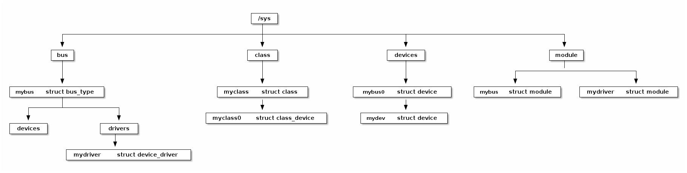
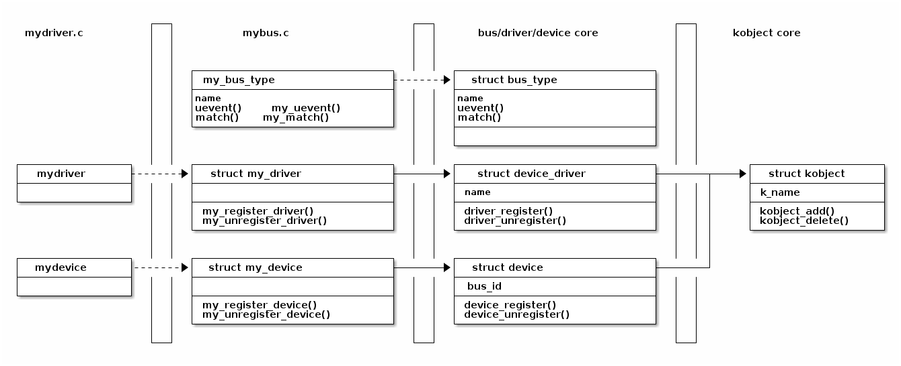
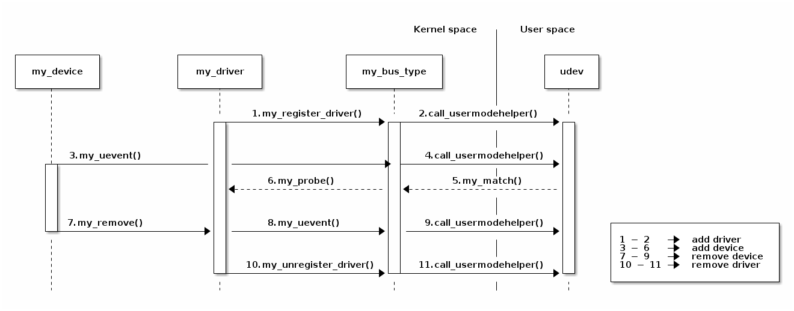

Linux 设备模型¶
概述¶
即插即用（Plug and Play）是一种技术，它支持自动添加和移除设备到系统中。它通过在系统启动时自动配置设备，来减少与这些设备使用的资源相关的冲突。为了实现这些目标，需要具备以下特性：
- 自动检测系统中添加和移除的设备（设备及其总线必须通知相应的驱动程序发生了配置更改）。
- 资源管理（地址、中断线、DMA 通道、内存区域），包括为设备分配资源并解决可能出现的冲突。
- 设备必须允许进行软件配置（设备资源（端口、中断以及 DMA 资源）必须允许驱动程序进行分配）。
- 操作系统在需要时必须自动加载新设备所需的驱动程序。
- 如果设备及其总线允许的话，系统应能够在运行时添加或移除设备，而无需重新启动系统（热插拔）。
要支持即插即用，BIOS、操作系统和设备都必须支持这项技术。设备必须具有提供给驱动程序进行识别的 ID，并且操作系统必须能够在配置更改出现时进行识别。
即插即用设备包括：PCI 设备（网卡）、USB（键盘、鼠标、打印机）等。
在 2.6 版本之前，内核没有统一的模型用来获取有关设备的信息。因此，Linux 开发团队开发了 Linux 设备模型，用于 Linux 设备。
该模型的主要目的是维护反映系统状态和结构的内部数据结构。这些信息包括系统中有哪些设备、它们在电源管理方面的状态如何，连接到哪个总线，有哪些驱动程序，以及系统中总线、设备、驱动程序的结构。
为了维护这些信息，内核使用以下对象：
- 设备（device）——连接到总线的物理设备
- 驱动程序（driver）——可与设备关联并对其执行操作的软件对象
- 总线（bus）——可连接其他设备的设备
- 类别（class）——具有类似行为的设备类型；存在用于磁盘、分区、串口等的类别。
- 子系统（subsystem）——对系统结构的视图；内核子系统包括设备（对系统中所有设备的分层视图）、总线（根据设备连接到总线的方式的总线视图）、类别等。
sysfs¶
内核通过 sysfs 虚拟文件系统在用户空间提供其模型的表示。它通常挂载在 /sys 目录下，包含以下子目录：
- block——系统中所有可用的块设备（磁盘、分区）
- bus——物理设备连接的总线类型（pci、ide、usb）
- class——系统中可用的驱动程序类别（网络、声音、usb）
- devices——连接到系统的设备的层次结构
- firmware——来自系统固件（ACPI）的信息
- fs——挂载的文件系统的信息
- kernel——内核状态信息（已登录用户、热插拔）
- module——当前加载的模块列表
- power——与电源管理子系统相关的信息
可以看出，在 sysfs 虚拟文件系统中的子目录与之前所描述的模型中的内核数据结构之间存在关联。尽管这种相似性可能导致你对两个概念产生混淆，但它们是不同的。内核设备模型可以在没有 sysfs 文件系统的情况下工作，但反之则不成立。
sysfs 信息存储在包含属性的文件中。一些标准属性（由具有相同名称的文件或目录表示）如下：
- dev——主设备号和次设备号。可用于自动创建 /dev 目录中的条目。
- device——指向包含设备的目录的符号链接；可用于发现提供特定服务的硬件设备（例如 ethi PCI 卡）。
- driver——指向驱动程序目录的符号链接（位于 /sys/bus/*/drivers 中）。
根据使用的总线和驱动程序，还有其他可用的属性。
Linux 设备中的基本结构¶
Linux 设备模型提供了一些结构，以确保硬件设备和设备驱动程序之间的交互。整个模型基于 kobject 结构构建层级，实现了以下结构：

- struct bus_type
- struct device
- struct device_driver
kobject 结构¶
kobject 结构本身并不执行单一功能。通常，这个结构被整合到更大的结构中。kobject 结构实际上包含了一组功能，将提供给 Linux 设备模型层次结构中更高级别的抽象对象。
例如，cdev 结构具有以下定义：
struct cdev {
struct kobject kob;
struct module *owner;
const struct file_operations *ops;
struct list_head list;
dev_t dev;
unsigned int count;
};
请注意，这个结构包含了一个 kobject 结构字段。
kobject 结构定义如下：
struct kobject {
const char *name;
struct list_head entry;
struct kobject *parent;
struct kset *kset;
struct kobj_type *ktype;
struct sysfs_dirent *sd;
struct kref kref;
unsigned int state_initialized:1;
unsigned int state_in_sysfs:1;
unsigned int state_add_uevent_sent:1;
unsigned int state_remove_uevent_sent:1;
unsigned int uevent_suppress:1;
};
可以看出，kobject 结构是有层次的：每一个对象都有一个父对象，并持有一个 kset 成员，其中包含相同级别的对象。
要想使用这个结构，你需要使用 kobject_init() 函数对其进行初始化。在初始化过程中，你需要使用 kobject_set_name 函数设置 kobject 结构的名称，该名称将显示在 sysfs 中。
对 kobject 的任何操作都是通过增加其内部计数器来完成的，这些操作使用 kobject_get() 函数来增加内部计数器，如果不再使用，则应使用 kobject_put() 函数进行减少。因此，只有当 kobject 对象的内部计数器达到 0 时，它才会被释放。我们需要一种用于通知的方法，以释放与包含 kobject 结构的设备结构（例如 cdev）相关联的资源。该方法是 release，其通过 ktype 字段 (struct kobj_type 类型) 与该对象关联。
kobject 结构是 Linux 设备模型的基本结构。模型中较高级别的结构包括 struct bus_type, struct device 和 struct device_driver。
总线¶
总线是处理器与输入/输出设备之间的通信通道。为了确保模型能够通用，所有输入/输出设备都通过这样的总线连接到处理器（即使它可以是没有物理硬件对应的虚拟总线）。
在添加系统总线后，它将出现在 sysfs 文件系统的 /sys/bus 目录中。与 kobjects 一样，总线可以组织成层次结构，并在 sysfs 中表示。
在 Linux 设备模型中，总线由结构体 struct bus_type 表示：
struct bus_type {
const char *name;
const char *dev_name;
struct device *dev_root;
struct bus_attribute *bus_attrs;
struct device_attribute *dev_attrs;
struct driver_attribute *drv_attrs;
struct subsys_private *p;
int (*match)(struct device *dev, struct device_driver *drv);
int (*uevent)(struct device *dev, struct kobj_uevent_env *env);
int (*probe)(struct device *dev);
int (*remove)(struct device *dev);
//...
};
可以注意到，总线具有名称、默认属性列表、一些特定函数和驱动程序的私有数据。 uevent 函数（以前称为 hotplug）用于热插拔设备。
总线操作包括注册、实现在结构体 struct bus_type 中描述的操作，以及迭代和检查连接到总线上的设备。
我们使用 bus_register() 函数进行总线注册，并使用 bus_unregister() 函数取消注册。
实现示例：
#include <linux/device.h>
/* mybus.c */
// 总线类型
struct bus_type my_bus_type = {
.name = "mybus",
.match = my_match,
.uevent = my_uevent,
};
static int __init my_bus_init(void)
{
int err;
//...
err = bus_register(&my_bus_type);
if (err)
return err;
//...
}
static void __exit my_bus_exit(void)
{
//...
bus_unregister(&my_bus_type);
//...
}
通常在 bus_type 结构中初始化的函数包括 match 和 uevent：
#include <linux/device.h>
#include <linux/string.h>
/* mybus.c */
// 将设备与驱动程序进行匹配；只需进行简单的名称测试
static int my_match(struct device *dev, struct device_driver *driver)
{
return !strncmp(dev_name(dev), driver->name, strlen(driver->name));
}
// 响应热插拔用户事件；添加环境变量 DEV_NAME
static int my_uevent(struct device *dev, struct kobj_uevent_env *env)
{
add_uevent_var(env, "DEV_NAME=%s", dev_name(dev));
return 0;
}
match 函数在向总线添加新设备或新驱动程序时使用。其作用是比较设备 ID 和驱动程序 ID。 uevent 函数在生成用户空间的热插拔事件之前调用，其作用是添加环境变量。
总线上的其他操作可能包括遍历附加的驱动程序或设备。虽然我们无法直接访问它们（驱动程序和设备的列表存储在驱动程序的私有数据中，即 subsys_private *p 字段），但我们可以使用 bus_for_each_dev 和 bus_for_each_drv 宏来对其进行遍历。
你可以通过 Linux 设备模型接口为关联的对象创建属性。这些属性在 sysfs 中的 bus 子目录中具有相应的文件。与总线相关联的属性由 bus_attribute 结构描述。
struct bus_attribute {
struct attribute attr;
ssize_t (*show)(struct bus_type *, char *buf);
ssize_t (*store)(struct bus_type *, const char *buf, size_t count);
};
通常，属性由宏 BUS_ATTR 定义。我们可以使用函数 bus_create_file() 和 bus_remove_file() 在总线结构中添加/删除属性。
下面是定义 my_bus 属性的示例：
/* mybus.c */
#define MY_BUS_DESCR "SO2 永远统治"
// 导出某个简单的总线属性
static ssize_t my_show_bus_descr(struct bus_type *bus, char *buf)
{
return snprintf(buf, PAGE_SIZE, "%s\n", MY_BUS_DESCR);
}
/*
* 定义属性——属性名为 descr；
* 全名为 bus_attr_descr；
* sysfs 条目应为 /sys/bus/mybus/descr
*/
BUS_ATTR(descr, 0444, my_show_bus_descr, NULL);
// 在模块初始化函数中指定属性
static int __init my_bus_init(void)
{
int err;
//...
err = bus_create_file(&my_bus_type, &bus_attr_descr);
if (err) {
/* 处理错误 */
}
//...
}
static void __exit my_bus_exit(void)
{
//...
bus_remove_file(&my_bus_type, &bus_attr_descr);
//...
}
总线由 bus_type 对象和 device 对象表示，我们稍后将进一步了解（总线也是一种设备）。
设备¶
系统中的任何设备都与 struct device 结构相关联。设备可以通过多种不同的内核方法（热插拔、设备驱动程序、系统初始化）被发现并注册到系统中。内核中的每个设备在 /sys/devices 目录下都有一个条目。
在 Linux 设备模型中，设备在最低级别上由 struct device 结构表示：
struct device {
//...
struct device *parent;
struct device_private *p;
struct kobject kobj;
const char *init_name; /* 设备的初始名称 */
//...
struct bus_type *bus; /* 设备所在的总线类型 */
struct device_driver *driver; /* 分配该设备的驱动程序 */
//...
void (*release)(struct device *dev);
};
结构字段包括父设备（通常是控制器），相关的 kobject，设备连接的总线，设备驱动程序以及在设备计数器达到 0 时调用的函数 (release)。
像往常一样，我们有注册函数 device_register() 和取消注册函数 device_unregister()。
要处理属性，我们有结构体 struct device_attribute 以及宏 DEVICE_ATTR 用于定义属性，还有函数 device_create_file() 以及 device_remove_file() 用于将属性添加到设备或从设备中删除属性。
需要注意的是，我们通常不直接使用结构体 struct device ，而是将其添加到另一个结构体中。例如：
// 我的设备类型
struct my_device {
char *name;
struct my_driver *driver;
struct device dev;
};
通常，总线驱动程序会导出用于添加或移除此类设备的函数，如下所示：
/* mybus.c */
/* 总线设备（父设备）*/
// 父设备释放函数
static void my_bus_device_release(struct device *dev)
{
}
// 父设备
static struct device my_bus_device = {
.init_name = "mybus0",
.release = my_bus_device_release
};
/* 设备 */
/*
* 由于我们不使用引用计数，我们使用一个无操作的
* 释放函数
*/
static void my_dev_release(struct device *dev)
{
}
int my_register_device(struct my_device *mydev)
{
mydev->dev.bus = &my_bus_type;
mydev->dev.parent = &my_bus_device;
mydev->dev.release = my_dev_release;
dev_set_name(&mydev->dev, mydev->name);
return device_register(&mydev->dev);
}
void my_unregister_device(struct my_device *mydev)
{
device_unregister(&mydev->dev);
}
/* 导出注册/注销设备函数 */
EXPORT_SYMBOL(my_register_device);
EXPORT_SYMBOL(my_unregister_device);
如上所示，函数 my_register_device 和 my_unregister_device 用于向总线添加/移除设备的操作，这两个函数与总线定义处于同一个文件。这里设备结构体没有被初始化；它们在系统通过热插拔或驱动程序的直接注册发现设备时，将被初始化，之后系统会调用函数 my_register_device 来将设备添加到总线中。
要在驱动程序实现中使用上述定义的总线，我们必须定义一个类型为 my_device 的结构体，对其进行初始化，并使用总线导出的函数 (my_register_device) 进行注册。
/* mydriver.c */
static struct my_device mydev;
char devname[NAME_SIZE];
//...
// 注册设备
int err;
sprintf(devname, "mydev0");
mydev.name = devname;
mydev.driver = &mydriver;
dev_set_drvdata(&mydev.dev, &mydev);
err = my_register_device(&mydev);
if (err < 0) {
/* 处理错误 */
}
//..
// 注销设备
my_unregister_device(&mydev)
驱动程序¶
借助 Linux 设备模型，我们可以实现系统设备和驱动程序之间的简单关联。驱动程序可以独立于物理设备导出信息。
在 sysfs 中，驱动程序信息没有单独的子目录与之关联；它们可以在不同位置的目录结构中找到：加载的模块在 /sys/module 中，在 /sys/devices 中可以找到与每个设备关联的驱动程序，在 /sys/class 中是属于某个类的驱动程序，在 /sys/bus 中是与每个总线关联的驱动程序。
系统通过结构体 struct device_driver 来区分设备驱动：
struct device_driver {
const char *name;
struct bus_type *bus;
struct driver_private *p;
struct module *owner;
const char *mod_name; /* 用于内置模块 */
int (*probe) (struct device *dev);
int (*remove) (struct device *dev);
void (*shutdown) (struct device *dev);
int (*suspend) (struct device *dev, pm_message_t state);
int (*resume) (struct device *dev);
};
在本结构体字段中，我们可以找到驱动程序的名称（出现在 sysfs 中），与驱动程序一起工作的总线以及在设备操作的各个时刻调用的函数。
与之前一样，我们有函数 driver_register() 和 driver_unregister() 来注册/注销驱动程序。
要处理属性，我们有结构体 struct driver_attribute 与宏 DRIVER_ATTR 用于定义属性，并且有函数 driver_create_file() 和 driver_remove_file() 用于向设备添加属性。
与设备一样，结构体 struct device_driver 通常被纳入到特定总线 (PCI、USB 等) 对应的另一个结构体中：
/* mybus.c */
// 我的驱动类型
struct my_driver {
struct module *module;
struct device_driver driver;
};
#define to_my_driver(drv) container_of(drv, struct my_driver, driver);
int my_register_driver(struct my_driver *driver)
{
int err;
driver->driver.bus = &my_bus_type;
err= driver_register(&driver->driver);
if (err)
return err;
return 0;
}
void my_unregister_driver(struct my_driver *driver)
{
driver_unregister(&driver->driver);
}
/* 导出注册/取消注册驱动程序函数 */
EXPORT_SYMBOL(my_register_driver);
EXPORT_SYMBOL(my_unregister_driver);
驱动程序的注册/注销操作被导出以供其他模块使用。
与设备一样，驱动程序的操作在总线初始化时定义，并导出供驱动程序使用。当实现一个与连接到总线上的设备配合工作的驱动程序时，我们将调用函数 my_register_driver 和 my_unregister_driver 来与总线关联。
要使用这些函数（在驱动程序实现中），我们必须声明一个类型为 my_driver 的结构体，对其进行初始化，并使用总线导出的函数进行注册。
/* mydriver.c */
static struct my_driver mydriver = {
.module = THIS_MODULE,
.driver = {
.name = "mydriver",
},
};
//...
// 注册
int err;
err = my_register_driver(&mydriver);
if (err < 0) {
/* 处理错误 */
}
//..
// 取消注册
my_unregister_driver(&mydriver);
类¶
类是 Linux 设备模型的高层次视图，它抽象了实现细节。例如，SCSI 和 ATA 驱动程序虽然有所不同，但都属于磁盘类。类根据功能对设备进行分组，而不考虑它们的连接方式或工作原理。类在 /sys/classes 中有对应的表示。
主要有两个结构用来描述类，分别是 struct class 和 struct device。struct class 结构描述了通用类，而结构体 struct device 则描述了与设备有关联的类。对于每种结构体，都有用于初始化/反初始化和添加属性的函数，这些函数在 include/linux/device.h 中有描述。
使用类的优势在于，我们可以借助用户空间中的 udev 程序（我们稍后将讨论），根据类信息自动在 /dev 目录中创建设备。
因此，我们将继续介绍一小组函数，这些函数与类一起使用以简化即插即用机制。
通用类由结构体 class 描述：
struct class {
const char *name;
struct module *owner;
struct kobject *dev_kobj;
struct subsys_private *p;
struct class_attribute *class_attrs;
struct class_device_attribute *class_dev_attrs;
struct device_attribute *dev_attrs;
int (*dev_uevent)(struct device *dev, struct kobj_uevent_env *env);
void (*class_release)(struct class *class);
void (*dev_release)(struct device *dev);
//...
};
你可以使用 class_register() 和 class_unregister() 函数对类进行初始化/反初始化。
static struct class my_class = {
.name = "myclass",
};
static int __init my_init(void)
{
int err;
//...
err = class_register(&my_class);
if (err < 0) {
/* 处理错误 */
}
//...
}
static void __exit my_cleanup(void)
{
//...
class_unregister(&my_class);
//...
}
与设备关联的类由结构体 struct device 描述。函数 device_create() 和 device_destroy() 负责初始化/反初始化。函数 device_create() 初始化 device 结构体，并将通用的 class 结构体和作为参数接收到的设备分配给它；此外，它还将创建类的属性 dev，其中包含设备的次设备号和主设备号 (minor:major)。因此，用户态的 udev 实用程序可以从该属性文件中读取所需的数据，通过调用 mknod 在 /dev 目录中创建一个节点。
以下是初始化的示例：
struct device* my_classdev;
struct cdev cdev;
struct device dev;
// 为设备 cdev.dev 初始化类
my_classdev = device_create(&my_class, NULL, cdev.dev, &dev, "myclass0");
// 销毁设备 cdev.dev 的类
device_destroy(&my_class, cdev.dev);
当发现新设备时，将为其分配一个类和节点，并在 /dev 目录中创建一个节点。对于上面的示例，将生成节点 /dev/myclass0。
热插拔¶
热插拔 描述了在系统运行时添加或移除设备而无需重新启动系统的机制。
热插拔事件是内核向用户空间发送的通知，用于指示系统配置发生了变化。这些事件在从内核创建或删除 kobject 时生成。由于这些对象是 Linux 设备模型的基础，包含在所有结构体中 (struct bus_type, struct device, struct device_driver 以及 struct class 等)，当创建或删除任何这些结构体时，都会生成热插拔事件 (uevent)。
当在系统中发现设备时，将生成事件。根据设备在 Linux 设备模型中所处的位置，将调用相应的事件函数（通常是与总线或类关联的 uevent 函数）。借助这些函数，驱动程序可以为用户空间设置系统变量。生成的事件然后到达用户空间。在这里 udev 程序会捕获这些事件。在 /etc/udev/ 目录中有针对该程序的配置文件。可以指定不同的规则来捕获特定事件并执行特定操作，这取决于内核或 uevent 函数中设置的系统变量。
通过这种方式，我们可以实现即插即用的机制。借助于 udev 和上述的类，可以自动为设备在 /dev/ 目录中创建条目，并且使用 udev 可以自动为设备加载驱动程序。
关于 udev 的规则位于 /etc/udev/rules.d 目录下。当事件发生时，该目录中以 .rules 结尾的任何文件都将被解析。有关如何在这些文件中编写规则的详细信息，请参阅 编写 udev 规则。用于测试的程序包括 udevmonitor, udevinfo 和 udevtest。
举个简单示例，假设我们希望在事件发生时自动加载设备的驱动程序。我们可以创建名为 /etc/udev/rules.d/myrules.rules 的新文件，其中包含以下内容：
SUBSYSTEM=="pnp", ATTRS{id}=="PNP0400", RUN+="/sbin/insmod /root/mydriver.ko"
这将仅选择属于 pnp 子系统（连接到 PNP 总线）且具有值为 PNP0400 的 id 属性的生成事件。
当找到这个规则时，将执行在 RUN 下指定的命令，将适当的驱动程序插入内核中。
即插即用¶
如上所述，在 Linux 设备模型中，所有设备都通过总线连接，不管总线具有相应的物理硬件或者仅仅是虚拟设备。
内核已经使用 bus_type 结构和用于注册/取消注册驱动程序与设备的函数实现了大多数总线。要实现一个驱动程序，我们必须首先确定其所支持的设备连接的总线，并使用该总线导出的结构和函数。主要的总线包括 PCI, USB, PNP, IDE, SCSI, platform 以及 ACPI 等等。
PNP 总线¶
即插即用机制提供了一种检测和设置未配置的传统驱动程序之类的资源的手段。所有的即插即用驱动程序、协议和服务都基于即插即用级别。它负责在驱动程序和协议之间进行信息交换。以下协议可用：
PNPBIOS——用于串行和并行端口等系统ISAPNP——提供对 ISA 总线的支持ACPI——提供了关于系统级设备的信息等
内核包含一个名为 pnp_bus 的总线，用于连接许多驱动程序。该总线的实现和工作遵循 Linux 设备模型，与我们上面讨论的内容非常相似。
由该总线导出的可以供驱动程序使用的函数和结构，主要包括：
struct pnp_driver——与总线关联的驱动程序类型pnp_register_driver()——用于在系统中注册 PNP 驱动程序的函数pnp_unregister_driver()——用于从系统中取消注册 PNP 驱动程序的函数
前面的小节中我们提到，总线具有一个名为 match 的函数，用于将设备与适当的驱动程序关联起来。例如，当发现新设备时，符合 match 函数所给条件的驱动程序会与新设备相关。通常，这个条件是对 ID（驱动程序 ID 和设备 ID）进行比较。常见的方法是在每个驱动程序中使用一个静态表，该表包含驱动程序支持的设备的信息，总线在验证时将使用该表。例如，对于并行端口设备，我们有表格 parport_pc_pnp_tbl：
static const struct pnp_device_id parport_pc_pnp_tbl[] = {
/* 标准 LPT 打印机端口 */
{.id = "PNP0400", .driver_data = 0},
/* ECP 打印机端口 */
{.id = "PNP0401", .driver_data = 0},
};
MODULE_DEVICE_TABLE(pnp, parport_pc_pnp_tbl);
每个驱动程序声明并初始化一个 pnp_driver 结构，例如 parport_pc_pnp_driver：
static int parport_pc_pnp_probe(struct pnp_dev *dev, const struct pnp_id *card_id,
const struct pnp_id *dev_id);
static void parport_pc_pnp_remove(struct pnp_dev* dev);
static struct pnp_driver parport_pc_pnp_driver = {
.name = "parport_pc",
.id_table = parport_pc_pnp_tbl,
.probe = parport_pc_pnp_probe,
.remove = parport_pc_pnp_remove,
};
我们可以注意到，该结构的字段包括对上述表格的指针和两个函数，系统在检测到新设备以及在设备从系统中移除时调用这些函数。与上面介绍的所有结构一样，驱动程序必须向系统注册：
static int __init parport_pc_init(void)
{
err = pnp_register_driver(&parport_pc_pnp_driver);
if (err < 0) {
/* 处理错误 */
}
}
static void __exit parport_pc_exit(void)
{
pnp_unregister_driver(&parport_pc_pnp_driver);
}
PNP 操作¶
到目前为止，我们已经讨论了 Linux 设备模型及其 API。要实现即插即用驱动程序，我们必须遵循 Linux 设备模型。
通常情况下，我们不需要在内核中添加新的总线，因为大多数现有的总线已经实现了（如 PCI、USB 等）。因此，我们首先必须确定设备连接的总线。在下面的示例中，我们将假设该总线为 PNP 总线，并使用上述描述的结构和函数。
添加驱动程序¶
除了常规操作外，驱动程序必须遵循 Linux 设备模型。因此，它将使用总线提供的函数在系统中注册。通常，总线提供一个特定的驱动程序结构，其中包含 struct device_driver 结构，驱动程序必须初始化并使用 *_register_driver 函数进行注册。例如，对于 PNP 总线，驱动程序必须声明并初始化一个类型为 struct pnp_driver 的结构，并使用 pnp_register_driver 进行注册：
static struct pnp_driver my_pnp_driver = {
.name = "mydriver",
.id_table = my_pnp_tbl,
.probe = my_pnp_probe,
.remove = my_pnp_remove,
};
static int __init my_init(void)
{
err = pnp_register_driver(&my_pnp_driver);
}
与传统驱动程序不同，即插即用驱动程序不会在初始化函数（上面示例中的 my_init）中使用 register_device() 注册设备。
如上所述，每个总线都有一个 match 函数，当系统检测到新设备时会调用该函数，以确定关联的驱动程序。因此，每个驱动程序需要能够导出其支持的设备的信息，以允许此检查通过并进一步调用其函数。在本实验中介绍的示例中，匹配函数执行设备名称和驱动程序名称之间的简单比较。大多数驱动程序使用包含设备信息的表，并将指向该表的指针存储在驱动程序结构中。例如，与 PNP 总线关联的驱动程序定义了类型为 struct pnp_device_id 的表，并使用指向它的指针初始化结构体 pnp_driver my_pnp_driver 中的字段 id_table：
static const struct pnp_device_id my_pnp_tbl[] = {
/* 标准 LPT 打印机端口 */
{.id = "PNP0400", .driver_data = 0},
/* ECP 打印机端口 */
{.id = "PNP0401", .driver_data = 0},
{ }
};
MODULE_DEVICE_TABLE(pnp,my_pnp_tbl);
static struct pnp_driver my_pnp_driver = {
//...
.id_table = my_pnp_tbl,
//...
};
在上面的示例中，驱动程序支持多个并行端口设备，这些设备在表格 my_pnp_tbl 中定义。总线在 match_device 函数中使用此信息。在添加驱动程序时，总线驱动程序将与其关联，并根据驱动程序名称在 sysfs 中创建新条目。然后，总线的 match 函数将针对每个支持的设备调用，以将驱动程序与其支持的任何连接设备关联起来。
移除驱动程序¶
要从内核中移除驱动程序，除了传统驱动程序所需的操作外，我们还必须取消注册 device_driver 结构。对于与 PNP 总线关联的驱动程序，我们必须使用 pnp_unregister_driver() 函数取消注册 pnp_driver 结构：
static struct pnp_driver my_pnp_driver;
static void __exit my_exit(void)
{
pnp_unregister_driver(&my_pnp_driver);
}
与传统驱动程序不同，即插即用驱动程序不会在模块卸载函数 (my_exit) 中取消注册设备。当驱动程序被移除时，所有它支持的设备对它的引用将被删除，并且 sysfs 中的条目也将被删除。
添加新设备¶
如上所述，即插即用驱动程序在初始化时不会注册设备。这个操作将在检测到新设备时调用的 probe 函数中进行。连接到 PNP 总线的设备将通过 pnp_driver 结构的 probe 函数添加到系统中：
static int my_pnp_probe(struct pnp_dev *dev, const struct pnp_id *card_id,
const struct pnp_id *dev_id) {
int err, iobase, nr_ports, irq;
//获取中断和端口
if (pnp_irq_valid(dev, 0))
irq = pnp_irq(dev, 0);
if (pnp_port_valid(dev, 0)) {
iobase = pnp_port_start(dev, 0);
} else
return -ENODEV;
nr_ports = pnp_port_len(dev, 0);
/* 注册设备 dev */
}
static struct pnp_driver my_pnp_driver = {
//...
.probe = my_pnp_probe,
//...
};
在内核中检测到设备（在引导时或通过“热插拔”插入设备）时，系统会生成中断并传递给总线驱动程序。使用函数 device_register() 注册设备，并将其连接到总线。然后还会生成对用户空间的调用，事件可以由 udev 处理。然后, udev 将迭代与总线关联的驱动程序列表，并对每个驱动程序调用 match 函数。 match 函数尝试为新设备找到驱动程序。找到合适的驱动程序后，将调用驱动程序的 probe 函数。如果函数成功结束，设备将添加到驱动程序的设备列表中，并根据设备名称在 sysfs 中创建新条目。
移除设备¶
如上所述，即插即用驱动程序在卸载驱动程序时不会取消注册设备。这个操作是在从系统中移除设备时调用的 remove 函数中完成的。对于连接到 PNP 总线的设备，取消注册将在 pnp_driver 结构中指定的 remove 函数中进行：
static void my_pnp_remove(struct pnp_dev *dev) {
/* 取消注册设备 dev */
}
static struct pnp_driver my_pnp_driver = {
//...
.remove = my_pnp_remove,
};
如上例所示，当检测到设备被移除时，将调用 my_pnp_remove 函数。还会生成对用户空间的调用，可以被 udev 检测到，并且会从 sysfs 中删除条目。
练习¶
重要
要解决练习，你需要执行以下步骤：
- 用模板来准备骨架
- 构建模块
- 将模块复制到虚拟机
- 启动虚拟机并在虚拟机中测试模块。
当前实验名称为 设备模型。请参阅任务名称的练习。
骨架代码是从位于 tools/labs/templates 的完整源代码示例中生成的。要解决任务，首先要为所有实验生成骨架代码：
tools/labs $ make clean
tools/labs $ LABS=<lab name> make skels
你还可以使用以下命令为单个任务生成骨架代码：
tools/labs $ LABS=<lab name>/<task name> make skels
生成骨架驱动程序后，构建源代码：
tools/labs $ make build
然后，复制模块并启动虚拟机：
tools/labs $ make copy
tools/labs $ make boot
模块将放置在 /home/root/skels/设备模型/<task_name> 目录中。
或者，我们可以通过 scp 命令复制文件，以避免重新启动虚拟机。有关通过网络连接到虚拟机的详细信息，请参阅 连接到虚拟机。
请查看 练习 部分以获取更详细的信息。
警告
在开始练习或生成骨架之前，请在 Linux 仓库中运行 git pull 命令，以确保你拥有最新版本的练习。
如果你有本地更改，pull 命令将失败。使用 git status 检查本地更改。如果要保留更改，在 pull 之前运行 git stash，之后运行 git stash pop。要放弃更改，请运行 git reset --hard master。
如果你在 git pull 之前已经生成了骨架，你需要再次生成骨架。
0. 引言¶
在 Linux 内核中找到以下符号的定义：
- 函数
dev_name,dev_set_name。- 函数
pnp_device_probe,pnp_bus_match,pnp_register_driver以及变量pnp_bus_type。
1. 总线实现¶
分析 bex.c 的内容，这是一个实现总线驱动程序的模块。按照标记为 TODO 1 的注释，实现缺失的功能：注册总线驱动程序，并添加一个名为 root、类型为 none、版本为 1 的新设备。
提示
参考 bex_add_dev()。
提示
注册和取消注册必须使用 bus_register() 和 bus_unregister() 完成。
加载该模块，并验证总线是否在 /sys/bus 中可见。验证设备是否在 /sys/bus/bex/devices 中可见。
卸载该模块，并注意到 sysfs 条目已被删除。
2. 添加类型和版本设备属性¶
添加两个只读设备属性, type 和 version。按照 TODO 2 的标记进行操作。
提示
你需要在 bex_dev_attrs 结构中添加这两个属性，如下所示：
&dev_attr_<insert-attribute-type-here>.attr,
提示
展示函数的一个可能实现如下所示：
static ssize_t
type_show(struct device *dev, struct device_attribute *attr, char *buf)
{
struct bex_device *bex_dev = to_bex_device(dev);
return sprintf(buf, "%s\n", bex_dev->type);
}
DEVICE_ATTR_RO(type);
观察在 /sys/bus/bex/devices/root 中出现了两个新属性。检查这些属性的内容。
3. 添加 del 和 add 总线属性¶
添加两个只写总线属性, del 和 add。 del 期望删除设备的名称，而 add 期望提供名称、类型和版本来创建一个新设备。按照 TODO 3 的标记进行操作，并查阅 `Buses`_。
提示
使用 sscanf() 解析来自 sysfs 的输入，并使用 bex_del_dev() 和 bex_add_dev() 删除和创建新设备。
下面是 store 函数的示例：
static ssize_t add_store(struct bus_type *bt, const char *buf, size_t count)
{
char name[32];
int ret;
ret = sscanf(buf, "%31s", name);
if (ret != 1)
return -EINVAL;
...
}
BUS_ATTR(add, S_IWUSR, NULL, add_store);
提示
如果 bex_add_dev/bex_del_dev 失败，store 函数应返回 0，否则返回 count。
创建一个新设备，并观察它在 /sys/bus/devices 中可见。然后删除它，并观察它从 sysfs 中消失。
提示
使用 echo 命令将内容写入总线属性：
$ echo "name type 1" > /sys/bus/bex/add
$ echo "name" > /sys/bus/bex/del
4. 注册 bex 杂项驱动程序¶
修改 bex-misc.c，使其在 bex 总线上注册驱动程序。插入 bmx_misc.ko 模块，并从 sysfs 创建一个名为“test”、类型为“misc”、版本为 2 的新 bex 设备。按照 TODO 4 的标记进行操作。
观察驱动程序在 /sys/bus/bex/drivers 中可见。
为什么没有调用 probe 函数？
提示
注意到 bex.c 中的总线匹配函数未实现。
在 bex.c 中实现总线匹配函数。按照 TODO 5 的标记进行操作。再次尝试创建一个新的 bex 设备，并观察这次 bex_misc 驱动程序的 probe 函数被调用。
5. 在 bex_misc probe 函数中注册杂项设备¶
修改 bex_misc.c，如果 version > 1，则拒绝探测。此外，在 bex_misc_probe 中注册定义的杂项设备，并在 bex_misc_remove 中取消注册。按照 TODO 6 的标记进行操作。
提示
使用 misc_register() 和 misc_deregister()。
创建一个名称为“test”、类型为“misc”、版本为 2 的新设备，并观察探测失败。创建一个名称为“test2”、类型为“misc”、版本为 1 的新设备，并观察探测成功。
检查 /sys/bus/bex/devices/test2，观察到我们有了一个新条目。确定杂项设备的主设备号和次设备号，创建一个字符设备文件，并尝试从杂项设备缓冲区中读取和写入数据。
提示
主设备号和次设备号应该在杂项设备的 dev 属性中可见。
6. 监视 uevent 通知¶
使用命令 udevadm monitor，观察以下情况发生时会发生什么：
- 插入
bex.ko和bex_misc.ko模块 - 创建一个类型为“type”的新设备
- 创建一个类型为“misc”、版本为 2 的新设备
- 创建一个类型为“misc”、版本为 1 的新设备
- 移除上述所有设备